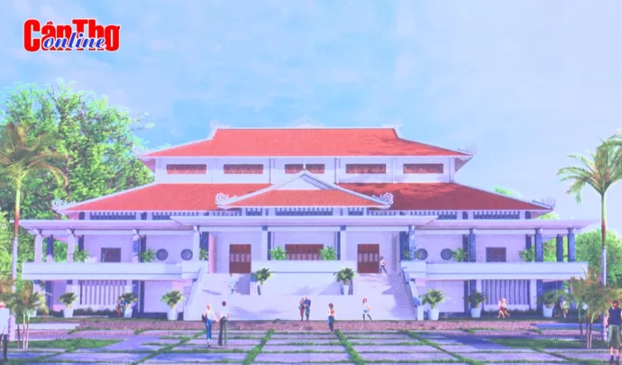

Di tích lịch sử Lộ Vòng Cung Cần Thơ
Khu tưởng niệm và nhà truyền thống trưng bày tư liệu, hiện vật về tuyến Lộ Vòng Cung và tinh thần chiến đấu của quân dân Tây Đô.
Xem chi tiết →

Lộ Vòng Cung - Đường tỉnh 923 uốn cong ôm trọn vùng ngoại thành phía Tây Nam trung tâm Thành phố Cần Thơ. Từ "vành đai lửa" đến "vành đai xanh" - hành trình của lịch sử, con người và thiên nhiên.
Thực hiện:
Nguyễn Thị Thảo My
Trần Lê Bảo Châu
GVHD: Nguyễn Thành Đạt
Thành phố Cần Thơ là trung tâm của vùng Đồng bằng sông Cửu Long. Với
vị trí địa kinh tế – địa chiến lược đặc biệt quan trọng, Cần Thơ từ
lâu đã trở thành đầu mối giao thông, cửa ngõ giao thương trong và
ngoài nước, đóng vai trò hạt nhân trong liên kết và phát triển vùng.
Đồng thời, thành phố là trung tâm kinh tế, văn hóa, giáo dục, khoa
học công nghệ và thương mại của ĐBSCL, nơi tập trung hệ thống giáo
dục, y tế chuyên sâu cùng các dịch vụ thương mại, tài chính và
logistics lớn nhất khu vực. Bên cạnh đó, Cần Thơ còn là trung tâm du
lịch quan trọng của vùng, nổi bật với các loại hình du lịch sông
nước, sinh thái và văn hóa đặc trưng, góp phần đa dạng hóa cơ cấu
kinh tế và thúc đẩy phát triển kinh tế – xã hội bền vững cho toàn
vùng.
Thực hiện chủ trương sắp xếp đơn vị hành chính nhằm tinh gọn bộ máy,
mở rộng không gian phát triển và nâng cao hiệu quả quản lí nhà nước,
Quốc hội và Ủy ban Thường vụ Quốc hội đã ban hành Nghị quyết số
202/2025/QH15 và Nghị quyết số 1668/NQ-UBTVQH15 năm 2025 về việc tổ
chức lại đơn vị hành chính cấp tỉnh tại vùng Đồng bằng sông Cửu
Long. Từ ngày 01/7/2025, toàn bộ diện tích tự nhiên và quy mô dân số
của thành phố Cần Thơ, tỉnh Sóc Trăng và tỉnh Hậu Giang được sắp
xếp, hợp nhất để hình thành một đơn vị hành chính mới có tên gọi là
thành phố Cần Thơ – trực thuộc Trung ương. Đây là bước điều chỉnh
hành chính có quy mô lớn, mang ý nghĩa chiến lược đối với sự phát
triển của thành phố.
| Điểm cực | Tọa độ | Hành chính | Tiếp giáp |
|---|---|---|---|
| Bắc | 10o19’ B | Phường Thốt Nốt | Hướng Bắc – Đông Bắc: giáp tỉnh Đồng Tháp và tỉnh Vĩnh Long |
| Nam | 09o14’ B | Xã Lai Hoà | Hướng Nam: giáp tỉnh Cà Mau |
| Đông | 106o17’ Đ | Xã Cù Lao Dung | Hướng Đông – Đông Nam: giáp Biển Đông |
| Tây | 105o13’ Đ | Xã Thanh An | Hướng Tây: giáp tỉnh An Giang |
Hiện nay, thành phố Cần Thơ có diện tích tự nhiên khoảng 6.360,83 km² và quy mô dân số khoảng 4.199.843 người, trở thành một trong những thành phố trực thuộc Trung ương có quy mô lớn về cả không gian lãnh thổ và dân số. Cụ thể, thành phố Cần Thơ có 103 đơn vị hành chính cấp xã, bao gồm 31 phường và 72 xã. Sau khi sáp nhập với tỉnh Hậu Giang và tỉnh Sóc Trăng, thành phố Cần Thơ có nhiều lợi thế để phát triển du lịch – với sự gia tăng các điểm du lịch mới, cùng với các sản phẩm và loại hình du lịch ngày càng phong phú, đa dạng. Không gian khai thác du lịch cũng được mở rộng đáng kể, từ khu vực thành thị đến nông thôn và các vùng sinh thái đặc trưng của Đồng bằng sông Cửu Long. Những điều kiện thuận lợi này tạo ra nhiều tiềm năng và cơ hội để thành phố khai thác hiệu quả tài nguyên du lịch, nâng cao sức hấp dẫn điểm đến và thúc đẩy ngành du lịch phát triển mạnh mẽ trong giai đoạn mới.
Thành phố Cần Thơ nằm ở vị trí trung tâm vùng Đồng bằng sông Cửu Long, giữ vai trò là đầu mối giao thông vận tải quan trọng, với sự kết nối đồng bộ giữa giao thông đường bộ, đường thủy và đường hàng không. Nhờ đó, thành phố có điều kiện thuận lợi để phát triển du lịch và trở thành điểm hội tụ, trung chuyển du lịch của toàn vùng.
Địa hình của thành phố Cần Thơ tương đối bằng phẳng, được hình thành và bồi đắp bởi hệ thống sông ngòi dày đặc, trong đó sông Hậu đóng vai trò là trục không gian sinh thái và cảnh quan chủ đạo. Dọc hai bên bờ sông Hậu có các cồn và cù lao như: cù lao Tân Lộc, cồn Sơn, cồn Khương, cồn Cái Khế, cồn Ấu, cồn Phong Nẫm, cồn An Tấn, cồn An Công, cồn Mỹ Phước, cồn An Mỹ, cù lao Dung và một số cồn bãi ven sông khác. Đây là những khu vực có cảnh quan sông nước đặc trưng, hệ sinh thái tự nhiên đa dạng và không gian văn hóa miệt vườn đặc sắc, tạo nền tảng quan trọng cho việc phát triển các loại hình du lịch sinh thái, du lịch cộng đồng và du lịch trải nghiệm gắn với sông nước vùng hạ lưu ĐBSCL.
b. Khí hậuThành phố Cần Thơ có khí hậu cận xích đạo gió mùa với đặc điểm nền nhiệt cao và ổn định, có hai mùa mưa – khô rõ rệt, ít chịu ảnh hưởng của bão vì vậy rất thuận lợi cho việc tổ chức và phát triển du lịch quanh năm.
c. Nguồn nướcThành phố có hệ thống sông ngòi kênh rạch khá dày đặc, trong đó lớn nhất là sông Hậu với tổng chiều dài chảy qua thành phố khoảng 125 km. Với hệ thống sông ngòi chằng chịt (mật độ khoảng 1,5 – 2,0 km/km2) và hệ thống các cồn trên sông Hậu là điều kiện thuận lợi để thành phố Cần Thơ phát triển mạnh loại hình du lịch sinh thái sông nước với các điểm du lịch nổi tiếng như: bến Ninh Kiều, chợ nổi Cái Răng, chợ nổi Ngã Bảy, khu du lịch cộng đồng sinh thái Cồn Sơn, cồn Mỹ Phước,…
Bên cạnh đó, các tuyến đường thủy như sông Hậu, sông Cần Thơ, kênh xáng Xà No, kênh Quản Lộ – Phụng Hiệp,... có vai trò quan trọng trong phát triển du lịch của thành phố, đồng thời kết nối du lịch với các tỉnh lân cận như An Giang, Đồng Tháp, Vĩnh Long và Cà Mau mở ra triển vọng hình thành những tuyến du lịch đường thủy quan trọng trong tương lai.
d. Sinh vậtThành phố Cần Thơ sở hữu nguồn tài nguyên sinh vật phong phú, tiêu biểu cho hệ sinh thái đặc trưng của vùng Đồng bằng sông Cửu Long, bao gồm hệ sinh thái nông nghiệp, hệ sinh thái đất ngập nước và hệ sinh thái rừng ngập mặn ven biển. Các hệ sinh thái này tạo nên sự đa dạng cao về thành phần loài và cấu trúc sinh thái, góp phần quan trọng vào việc duy trì cân bằng môi trường và bảo tồn đa dạng sinh học.
Cảnh quan canh tác nông nghiệp của Cần Thơ mang đậm bản sắc miệt vườn sông nước, được hình thành trên nền địa hình bằng phẳng và mạng lưới sông ngòi, kênh rạch chằng chịt. Các cánh đồng lúa, hoa màu và hệ thống vườn cây ăn trái tạo nên không gian xanh rộng lớn, hài hòa giữa sản xuất nông nghiệp và môi trường sinh thái. Nổi bật trong cảnh quan nông nghiệp là các vùng vườn cây ăn trái trù phú với nhiều loại đặc sản như sầu riêng, vú sữa, nhãn, chôm chôm, bưởi Năm Roi, cam sành, quýt, khóm, dâu Hạ Châu… phân bố tập trung tại các khu vực Cái Răng, Ba Láng, Vàm Xáng, Phong Điền,... Bên cạnh đó, các vườn chim tự nhiên như vườn cò Bằng Lăng, vườn cò Tân Long góp phần làm phong phú thêm cảnh quan canh tác, phản ánh mối quan hệ hài hòa giữa con người với tự nhiên trong quá trình khai thác và sử dụng đất nông nghiệp. Việc khai thác hợp lý các giá trị này không chỉ góp phần đa dạng hóa sản phẩm du lịch mà còn nâng cao sức hấp dẫn điểm đến, thúc đẩy phát triển du lịch theo hướng bền vững và gắn kết với bảo tồn tài nguyên thiên nhiên.
Các hệ sinh thái đất ngập nước phân bố tại nhiều khu vực đóng vai trò là nơi cư trú của nhiều loài động, thực vật bản địa. Tiêu biểu là Khu bảo tồn thiên nhiên Lung Ngọc Hoàng với diện tích 8.836,07 ha (vùng lõi khoảng 2.800 ha), được xem là “lá phổi xanh” của thành phố, có giá trị cao về bảo tồn đa dạng sinh học. Khu bảo tồn ghi nhận 330 loài thực vật và 206 loài động vật, bao gồm nhiều loài chim nước, thú nhỏ và thủy sinh đặc trưng của vùng đất ngập nước, trong đó có một số loài quý hiếm cần được bảo vệ. Bên cạnh đó, hệ sinh thái rừng tràm và rừng ngập mặn phòng hộ ven biển tại các khu vực Mỹ Tú, Châu Thành, Ngã Năm, Trần Đề, Cù lao Dung và Vĩnh Châu cũng góp phần làm giàu thêm nguồn tài nguyên sinh vật, là nguồn tài nguyên quý giá để khai thác du lịch sinh thái kết hợp giáo dục bảo vệ môi trường.
e. BiểnSau khi sáp nhập, thành phố Cần Thơ không chỉ mở rộng không gian lãnh thổ về phía đất liền mà còn tiếp cận trực tiếp không gian biển, hình thành vùng biển và ven biển có vai trò ngày càng quan trọng trong phát triển kinh tế – xã hội nói chung và du lịch nói riêng. Thành phố hiện có đường bờ biển dài khoảng 72 km, chiếm khoảng 2,21% tổng chiều dài bờ biển cả nước (chủ yếu thuộc địa bàn tỉnh Sóc Trăng cũ). Khu vực này sở hữu các bãi biển hoang sơ chưa bị con người khai thác quá mức như Mỏ Ó (xã Trần Đề) và Hồ Bể (xã Vĩnh Châu), mang đặc trưng cảnh quan biển – vịnh cửa sông của vùng hạ lưu Đồng bằng sông Cửu Long, có tiềm năng phát triển các loại hình du lịch nghỉ dưỡng, du lịch sinh thái và du lịch trải nghiệm văn hóa biển.
Bên cạnh tài nguyên cảnh quan biển, hệ thống hạ tầng giao thông và liên kết tuyến điểm du lịch biển đảo cũng tạo lợi thế quan trọng cho thành phố trong khai thác không gian du lịch biển. Việc đưa vào khai thác tuyến tàu cao tốc Ninh Kiều (Cần Thơ) – Trần Đề (Sóc Trăng) – Côn Đảo (TP.HCM) góp phần tăng cường khả năng kết nối giữa trung tâm đô thị Cần Thơ với khu vực ven biển và các điểm du lịch biển đảo trọng điểm. Tuyến giao thông này không chỉ mở rộng không gian du lịch của thành phố theo hướng “sông – biển – đảo” mà còn tạo điều kiện thuận lợi để đa dạng hóa sản phẩm du lịch, nâng cao sức hấp dẫn của điểm đến và từng bước khẳng định vai trò của Cần Thơ trong mạng lưới du lịch biển của khu vực Nam Bộ.
2.2. Tài nguyên du lịch văn hoáThành phố Cần Thơ có nhiều di tích lịch sử văn hóa, kiến trúc nghệ thuật và danh lam thắng cảnh; trong đó có 103 di tích đã được xếp hạng (01 di tích lịch sử đặc biệt cấp quốc gia, 32 di tích lịch sử cấp quốc gia và 72 di tích lịch sử cấp thành phố), có 13 di sản văn hóa phi vật thể quốc gia và 4 hiện vật được Thủ tướng Chính phủ công nhận là bảo vật quốc gia. Thành phố Cần Thơ đang tập trung khai thác hiệu quả các di tích lịch sử cùng nền văn hóa lâu đời, đậm đà bản sắc dân tộc đảm bảo gắn kết nhiệm vụ bảo tồn và phát huy giá trị di sản cùng với phát triển du lịch bền vững tại địa phương.
b. Làng nghềThành phố Cần Thơ sở hữu hệ thống làng nghề truyền thống phong phú, hình thành và phát triển gắn liền với đời sống kinh tế – văn hóa của cư dân vùng sông nước Đồng bằng sông Cửu Long. Nhiều làng nghề lâu đời hiện đang được bảo tồn và liên kết khai thác phục vụ phát triển du lịch, tiêu biểu như làng nghề hủ tiếu (phường An Bình), làng hoa kiểng Phó Thọ – Bà Bộ (phường Long Tuyền), làng nghề đan lọp Thới Long, làng nghề đan lưới Thơm Rơm (phường Thới Long) và làng nghề bánh tráng Thuận Hưng (phường Thuận Hưng). Các làng nghề này không chỉ tạo ra sản phẩm đặc trưng địa phương mà còn là không gian để du khách trải nghiệm quy trình sản xuất thủ công truyền thống.
Bên cạnh đó, Cần Thơ từng có những làng nghề phát triển trong quá khứ, như làng nghề đóng ghe xuồng ven sông Cần Thơ và làng nghề đan cần xé tại phường Ngã Bảy. Tuy nhiên, trước sự thay đổi của thị trường và phương thức sản xuất, một số nghề truyền thống hiện nay chỉ còn tồn tại ở quy mô nhỏ, mang tính duy trì, như nghề đan cần xé với thu nhập không ổn định, hay nghề đóng ghe xuồng đã mai một gần như không còn. Thực trạng này đặt ra yêu cầu cấp thiết về bảo tồn, phục hồi và gắn kết làng nghề với hoạt động du lịch nhằm tạo sinh kế bền vững cho người dân. Trong bối cảnh đó, một số làng nghề mới có tiềm năng trở thành điểm tham quan du lịch đã và đang hình thành, như làng nghề đan lục bình, làng trồng mai và làng chế biến trà mãng cầu, phân bố rải rác trên địa bàn tỉnh Hậu Giang cũ. Các làng nghề này góp phần đa dạng hóa sản phẩm du lịch nông thôn, du lịch trải nghiệm, đồng thời khai thác hiệu quả nguồn nguyên liệu địa phương và lao động tại chỗ.
Ngoài ra, sau khi mở rộng không gian lãnh thổ, thành phố Cần Thơ còn tiếp nhận nhiều làng nghề truyền thống có giá trị văn hóa đặc sắc từ tỉnh Sóc Trăng cũ. Tiêu biểu là làng nghề làm bánh Pía đã được Bộ Văn hóa, Thể thao và Du lịch công nhận là di sản văn hóa phi vật thể cấp quốc gia thuộc loại hình nghề thủ công truyền thống. Bên cạnh đó, các nghề truyền thống khác như làm lạp xưởng, bánh in, đan đát, vẽ tranh trên kiếng và giã cốm dẹp cũng góp phần làm giàu thêm bản sắc văn hóa địa phương. Việc bảo tồn và phát triển các nghề truyền thống này tạo điều kiện thuận lợi để thu hút du khách tham quan, trải nghiệm, qua đó nâng cao giá trị khai thác du lịch văn hóa và du lịch cộng đồng của thành phố.
c. Lễ hội và sự kiện đặc biệtThành phố Cần Thơ hiện có khoảng 100 lễ hội lớn nhỏ, trong đó có khoảng 25 lễ hội truyền thống được tổ chức thường niên, phản ánh đời sống văn hóa tinh thần phong phú của cộng đồng cư dân vùng Đồng bằng sông Cửu Long. Các lễ hội không chỉ là không gian sinh hoạt văn hóa tín ngưỡng của người dân địa phương mà còn trở thành sự kiện thu hút du khách, góp phần quảng bá hình ảnh và bản sắc văn hóa của thành phố. Tiêu biểu có thể kể đến các lễ hội truyền thống như Lễ hội Kỳ Yên đình Bình Thủy, Lễ hội Chùa Ông, Lễ vía Bà Thiên Hậu Thánh Mẫu, Lễ cúng Quan Công, Cúng Thần Tài, cùng các lễ hội dân gian và tôn giáo khác diễn ra định kỳ trong năm.
Hệ thống lễ hội tại Cần Thơ mang đậm dấu ấn giao thoa văn hóa của ba cộng đồng dân tộc Kinh, Khmer và Hoa, thể hiện rõ nét sự đa dạng và thống nhất trong đời sống văn hóa vùng. Người Kinh duy trì các lễ hội truyền thống như Tết Nguyên Tiêu, Lễ Vu Lan, Nghinh Ông và Kỳ Yên, Lễ dâng hoa, dâng hương tại Đền thờ Bác Hồ gắn với tín ngưỡng nông nghiệp và sinh hoạt cộng đồng; Đối với đồng bào Khmer, các lễ hội tiêu biểu gồm Chôl Chnăm Thmây, Óc Om Bóc, Đua ghe Ngo, trong khi đó, cộng đồng người Hoa có hệ thống lễ hội riêng mang đậm màu sắc tín ngưỡng dân gian và văn hóa truyền thống, tiêu biểu là Lễ vía Bà Thiên Hậu, Lễ hội Quan Thánh Đế Quân và các lễ hội tại các hội quán, chùa miếu.
Bên cạnh các lễ hội truyền thống, với lợi thế là đô thị trung tâm của vùng Đồng bằng sông Cửu Long, có hệ thống cơ sở hạ tầng kỹ thuật phát triển và mạng lưới giao thông thuận tiện, thành phố Cần Thơ thường xuyên đăng cai tổ chức các sự kiện văn hóa, thể thao và du lịch quy mô vùng và quốc gia. Tiêu biểu là Lễ hội Bánh dân gian Nam Bộ, Ngày hội Du lịch Đồng bằng sông Cửu Long, Lễ hội văn hoá sông nước Cần Thơ,... và nhiều sự kiện chuyên đề khác, góp phần đa dạng hóa sản phẩm du lịch sự kiện và nâng cao vị thế của Cần Thơ trong không gian văn hóa – du lịch vùng.
d. Ẩm thựcThành phố Cần Thơ là nơi định cư lâu đời của các cộng đồng dân tộc Kinh, Khmer và Hoa, tạo nên nền văn hóa ẩm thực đa dạng, phong phú và giàu bản sắc. Sự giao thoa văn hóa được thể hiện rõ qua các món ăn đặc trưng của vùng sông nước Đồng bằng sông Cửu Long, vừa dân dã vừa tinh tế, tiêu biểu như cháo cá lóc rau đắng đồng, cá lóc nướng trui, canh chua cá linh bông so đũa, chè bưởi Cần Thơ, bánh cống, bánh tét lá cẩm, bánh xèo Nam Bộ, nem nướng và bánh hỏi mặt võng.
Bên cạnh các món ăn truyền thống, Cần Thơ còn nổi bật với hệ thống nông sản đặc trưng và sản phẩm OCOP có giá trị cao như bưởi Năm Roi Phú Hữu, xoài cát Hòa Lộc, quýt đường Long Trị, cam sành Ngã Bảy và đọt choại. Trong đó, khóm Cầu Đúc là đặc sản nổi tiếng của vùng, được khai thác gắn với du lịch sinh thái cộng đồng và ẩm thực địa phương với một số món ăn đặc trưng và sản phẩm chế biến từ khóm.
Ẩm thực Cần Thơ còn gây ấn tượng bởi sự phong phú của các món ăn dân dã và các biến tấu sáng tạo từ nguyên liệu bản địa như cháo lòng Cái Tắc, xáo măng vịt, lẩu gà đồng, cá thát lát rút xương, cá lau kiếng, dừa non, đọt choại và sâm đất. Ngoài ra, các đặc sản vùng như bánh cống, bún nước lèo, bánh pía – lạp xưởng Vũng Thơm, hành tím Vĩnh Châu, xá pấu Ngã Năm và mắm cá rô không xương, cùng với các thương hiệu ẩm thực truyền thống như Tân Huê Viên, Quảng Trân và Công Lập Thành, góp phần khẳng định giá trị ẩm thực và đa dạng hóa sản phẩm du lịch của thành phố Cần Thơ.
e. Công trình lao động sáng tạo của con ngườiThành phố Cần Thơ là trung tâm đô thị lớn của vùng Đồng bằng sông Cửu Long, sở hữu nhiều địa điểm tham quan, vui chơi, giải trí và học tập có giá trị văn hóa, lịch sử và cảnh quan. Tiêu biểu là hệ thống Bảo tàng Cần Thơ, Thư viện thành phố Cần Thơ, Sân vận động Cần Thơ, Công viên Lưu Hữu Phước, Công viên Tao Đàn, Công viên Văn hóa Sông Hậu, Bến Ninh Kiều, cầu Cần Thơ và cầu Vàm Cống – những công trình gắn liền với hình ảnh đô thị sông nước hiện đại. Bên cạnh đó, các cơ sở nghiên cứu và đào tạo như Trường Đại học Cần Thơ, Viện Lúa Đồng bằng sông Cửu Long và Nông trường Sông Hậu không chỉ có giá trị khoa học – giáo dục mà còn là điểm tham quan tìm hiểu đặc trưng nông nghiệp và tri thức của vùng.
Sau khi sáp nhập, không gian du lịch của thành phố Cần Thơ tiếp tục được mở rộng với nhiều công trình văn hóa, tâm linh và giải trí hiện đại, góp phần làm phong phú thêm sản phẩm du lịch. Nổi bật có Thiền viện Trúc Lâm Hậu Giang, Thiền viện Trúc Lâm Sóc Trăng, Bảo tàng Khmer, Liên hoa bảo tháp, Hồ nước ngọt, cùng các không gian vui chơi – giải trí như Công viên Ánh sáng Kỳ quan cổ đại, Công viên Chiến Thắng và Công viên Kittyd & Minnied. Hệ thống công trình đa dạng này không chỉ đáp ứng nhu cầu tham quan, nghỉ dưỡng và trải nghiệm của du khách mà còn góp phần quảng bá hình ảnh thành phố Cần Thơ năng động, hiện đại, giàu bản sắc văn hóa trong tiến trình phát triển và hội nhập.
Thành phố Cần Thơ định hướng phát triển du lịch theo hướng đa dạng hóa sản phẩm, nâng cao chất lượng dịch vụ và gắn kết chặt chẽ giữa phát triển kinh tế với bảo tồn tài nguyên, gìn giữ bản sắc văn hóa. Các loại hình du lịch được xác định không chỉ đáp ứng nhu cầu tham quan, trải nghiệm của du khách mà còn góp phần thúc đẩy liên kết vùng, nâng cao vị thế của Cần Thơ trong mạng lưới du lịch quốc gia và khu vực. Theo đó, hoạt động du lịch của thành phố tập trung phát triển sáu loại hình chủ yếu sau đây:
3.1. Du lịch sinh tháiDu lịch sinh thái là một trong những loại hình chủ đạo của thành phố Cần Thơ, gắn liền với đặc trưng đô thị sông nước của vùng Đồng bằng sông Cửu Long. Thành phố có hệ thống sông ngòi, kênh rạch chằng chịt với trục chính là sông Hậu, cùng nhiều cù lao, cồn và vùng đất ngập nước có cảnh quan tự nhiên đặc sắc. Các sản phẩm du lịch sinh thái tiêu biểu gồm du lịch miệt vườn tại Phong Điền, du lịch sông nước tại cù lao Tân Lộc, cồn Sơn, chợ nổi Cái Răng và các tuyến du lịch đường sông kết hợp tham quan di tích, làng nghề truyền thống. Sau sáp nhập, hệ thống du lịch sinh thái tiếp tục được mở rộng với các điểm nổi bật như Khu bảo tồn thiên nhiên Lung Ngọc Hoàng, rừng tràm Vị Thủy, rừng bần Cù Lao Dung, góp phần đa dạng hóa sản phẩm du lịch gắn với bảo tồn thiên nhiên.
3.2. Du lịch nông nghiệp, du lịch cộng đồngDu lịch nông nghiệp và du lịch cộng đồng được phát triển trên nền tảng cảnh quan canh tác đặc trưng và đời sống sinh hoạt của cư dân vùng sông nước. Các vườn cây ăn trái, làng nghề truyền thống và khu dân cư ven sông tạo điều kiện thuận lợi cho các hoạt động trải nghiệm như tham quan vườn, thu hoạch nông sản, thưởng thức ẩm thực địa phương và lưu trú homestay. Nhiều mô hình du lịch cộng đồng đã bước đầu hình thành tại Phong Điền, Mỹ Tú, Kế Sách, Cù Lao Dung, gắn với xây dựng nông thôn mới, phát huy giá trị văn hóa bản địa và nâng cao sinh kế cho người dân.
3.3. Du lịch văn hóa, du lịch tâm linhThành phố Cần Thơ sở hữu hệ thống di tích lịch sử – văn hóa, công trình kiến trúc và cơ sở tín ngưỡng đa dạng của ba dân tộc Kinh, Khmer và Hoa. Các điểm tham quan tiêu biểu gồm đình Bình Thủy, chùa Nam Nhã, chùa Ông, Khám Lớn Cần Thơ, Khu di tích Giàn Gừa, Thiền viện Trúc Lâm Phương Nam cùng nhiều ngôi chùa Khmer đặc sắc như chùa Dơi, chùa Đất Sét, chùa Chén Kiểu, chùa Som Rong. Bên cạnh đó, các lễ hội truyền thống như Oóc Om Bóc – Đua ghe Ngo, Nghinh Ông, Kỳ Yên, Chol Chnam Thmay… góp phần tạo nên sức hút lớn cho loại hình du lịch văn hóa – tâm linh gắn với giáo dục truyền thống và trải nghiệm bản sắc địa phương.
3.4. Du lịch biểnSau sáp nhập, thành phố Cần Thơ có đường bờ biển dài khoảng 72 km, mở ra tiềm năng phát triển du lịch biển. Các điểm du lịch tiêu biểu như bãi biển Mỏ Ó (xã Trần Đề), biển Hồ Bể (xã Vĩnh Châu) vẫn giữ được nét hoang sơ, kết hợp với rừng bần ven biển và các hoạt động trải nghiệm đời sống ngư dân. Tuyến tàu cao tốc Cần Thơ – Trần Đề – Côn Đảo là lợi thế quan trọng, góp phần kết nối không gian du lịch biển – đảo, tạo động lực phát triển du lịch biển gắn với nghỉ dưỡng và khám phá sinh thái ven biển.
3.5. Du lịch đô thịDu lịch đô thị tập trung chủ yếu tại khu vực trung tâm thành phố, đặc biệt là phường Ninh Kiều, với các không gian công cộng và công trình biểu tượng như bến Ninh Kiều, cầu đi bộ, công viên Sông Hậu, tượng đài Chủ tịch Hồ Chí Minh, chợ đêm Ninh Kiều. Các hoạt động du thuyền trên sông, thưởng thức đờn ca tài tử, cải lương và ẩm thực Nam Bộ tạo nên sản phẩm du lịch đô thị sông nước đặc trưng. Đây là loại hình được xác định là sản phẩm du lịch chủ lực của thành phố trong giai đoạn phát triển mới.
3.6. Du lịch kết hợp hội nghị, hội thảo, triển lãm, sự kiện (Du lịch MICE)Với vai trò là trung tâm vùng Đồng bằng sông Cửu Long, thành phố Cần Thơ có điều kiện thuận lợi để phát triển du lịch MICE nhờ hệ thống hạ tầng đồng bộ, giao thông thuận tiện và cơ sở lưu trú chất lượng cao. Các địa điểm như bến Ninh Kiều, công viên Lưu Hữu Phước, sân vận động Cần Thơ cùng các trung tâm hội nghị, khách sạn và trung tâm thương mại hiện đại đáp ứng tốt nhu cầu tổ chức hội nghị, hội thảo, triển lãm, lễ hội và sự kiện quy mô lớn. Du lịch MICE được định hướng phát triển gắn với du lịch đô thị và du lịch sinh thái, góp phần nâng cao vị thế của thành phố Cần Thơ trên bản đồ du lịch quốc gia và khu vực.
Khu tưởng niệm và nhà truyền thống trưng bày tư liệu, hiện vật về tuyến Lộ Vòng Cung và tinh thần chiến đấu của quân dân Tây Đô.

Đình Bình Thủy (hay Long Tuyền Cổ Miếu) ở Cần Thơ là một di tích lịch sử văn hóa lâu đời (hơn 180 năm), mang đậm kiến trúc đình làng Nam Bộ với gỗ, ngói âm dương, đá.
Trận đánh lớn của Tiểu đoàn Tây Đô tại kênh Ông Hào (08/06/1965) — chiến công tiêu biểu trong kháng chiến.
Chùa Ông Cần Thơ là ngôi chùa cổ của người Hoa, thờ Quan Thánh Đế Quân. Chùa nổi bật với kiến trúc Trung Hoa đặc sắc và giá trị văn hóa – lịch sử lâu đời.
Giàn gừa nguyên sinh — nơi từng hoạt động cách mạng, cất giấu vũ khí và tổ chức huấn luyện biệt động trong kháng chiến.
Khám Lớn Cần Thơ là di tích lịch sử gắn với thời kỳ kháng chiến, nơi từng giam giữ nhiều chiến sĩ cách mạng. Đây là chứng tích về tinh thần đấu tranh kiên cường của nhân dân Cần Thơ.
Di tích Lịch sử Chiến thắng Chương Thiện ghi dấu chiến công tiêu biểu của quân và dân Tây Nam Bộ trong kháng chiến chống Mỹ. Di tích thể hiện tinh thần chiến đấu anh dũng và ý chí bảo vệ quê hương của nhân dân vùng Chương Thiện.

Khu trù mật Vị Thanh – Hỏa Lựu là di tích lịch sử gắn với chính sách dồn dân lập ấp của chính quyền Sài Gòn trước năm 1975. Nơi đây phản ánh rõ cuộc đấu tranh kiên cường của nhân dân trước sự áp bức và tinh thần yêu nước bền bỉ của vùng Tây Nam Bộ.
Vườn mận là căn cứ chỉ huy và nơi xuất phát các mũi tiến công trong Tết Mậu Thân 1968 tại Cần Thơ.
Đền thờ Bác Hồ tại Hậu Giang nằm ở ấp 3, xã Lương Tâm, huyện Long Mỹ, là di tích lịch sử cấp quốc gia để tưởng niệm Chủ tịch Hồ Chí Minh. Khu di tích gồm Nhà tưởng niệm, Nhà trưng bày về cuộc đời Bác và các hạng mục phụ trợ, là địa điểm giáo dục truyền thống quan trọng của địa phương.

Chợ nổi Cái Răng, nằm trên sông Cần Thơ, là một trong những chợ nổi sầm uất nhất miền Tây, nổi bật với hình ảnh những chiếc thuyền buôn bán đầy màu sắc, phản ánh đời sống sinh hoạt và văn hóa đặc trưng của vùng sông nước Tây Nam Bộ.
Mộ nhà thơ yêu nước Cử nhân Phan Văn Trị tại Cần Thơ là điểm đến gợi nhắc về tấm gương sáng của một nhà thơ – chiến sĩ, đồng thời góp phần làm phong phú hành trình khám phá văn hóa và lịch sử địa phương.

Khu di tích Chiến thắng Tầm Vu (Hậu Giang) là nơi ghi dấu chiến công tiêu biểu của quân và dân ta trong thời kỳ kháng chiến chống Pháp, thể hiện tinh thần chiến đấu anh dũng và mưu trí. Di tích có ý nghĩa lịch sử quan trọng, góp phần giáo dục truyền thống yêu nước cho các thế hệ hôm nay.

Chùa Mahatup (Chùa Dơi, Chùa Mã Tộc) ở Sóc Trăng là ngôi chùa Khmer cổ kính hơn 400 năm (xây 1569) nổi tiếng với hàng ngàn con dơi khổng lồ (dơi quạ) trú ngụ, kiến trúc độc đáo giao thoa Việt-Khmer, thờ Phật Thích Ca, và là di tích cấp Quốc gia, biểu tượng văn hóa, tâm linh đặc sắc của vùng đất này.
Khu di tích Trường Taberd (hay còn gọi là Di tích lịch sử - Văn hóa cấp Quốc gia Trường Taberd) tại Sóc Trăng là di tích lịch sử ghi dấu sự kiện quan trọng: nơi đón tiếp đoàn tù chính trị Côn Đảo về đất liền sau Cách mạng tháng Tám 1945, do người dân Sóc Trăng chuẩn bị, nay là Nhà trưng bày Khu di tích lịch sử Trường Taberd thuộc Trường THPT Ischool, trưng bày hiện vật giá trị về sự kiện này.
Thiền viện Trúc Lâm Phương Nam là ngôi thiền viện lớn nhất miền Tây, mang đậm kiến trúc thời Lý – Trần, là điểm đến tâm linh thanh tịnh và biểu tượng văn hóa đặc sắc của Cần Thơ.
Hủ Tiếu Sáu Hoài, gần chợ nổi Cái Răng, nổi tiếng với lò hủ tiếu truyền thống, món Pizza Hủ Tiếu độc đáo và không khí miệt vườn miền Tây Cần Thơ.

Đền thờ Vua Hùng được đầu tư xây dựng nhằm giáo dục truyền thống “Uống nước nhớ nguồn”, đáp ứng nhu cầu tín ngưỡng của nhân dân thành phố Cần Thơ và vùng Đồng bằng sông Cửu Long. Công trình còn là điểm nhấn văn hóa – du lịch, góp phần kết nối các di tích lịch sử và thúc đẩy phát triển du lịch của thành phố Cần Thơ.

Bè cá Bảy Bon là điểm du lịch sinh thái độc đáo, nơi du khách trải nghiệm đời sống sông nước miền Tây như cho cá ăn, câu cá, massage cá koi và thưởng thức các món ăn từ cá tươi. Mô hình kết hợp nuôi trồng thủy sản với du lịch của nông dân Lý Văn Bon đã tạo nên nét văn hóa đặc trưng, góp phần làm phong phú sản phẩm du lịch Cần Thơ.

Bến Ninh Kiều là biểu tượng của Cần Thơ, nơi vẻ đẹp sông nước hiền hòa hòa quyện với nhịp sống sôi động, đậm chất miền Tây. Đây không chỉ là điểm hẹn văn hóa – du lịch mà còn lưu giữ hồn cốt của vùng đất Tây Đô.
"Nhà lồng chợ Cần Thơ" (hay Chợ cổ Cần Thơ) là di tích kiến trúc độc đáo, biểu tượng của thành phố, nằm cạnh bến Ninh Kiều (Đường Hai Bà Trưng, Q. Ninh Kiều), nổi tiếng với kiến trúc cổ kính, mái ngói âm dương và các gian hàng bán đồ lưu niệm, thổ cẩm, đặc sản địa phương, thu hút đông đảo du khách và là địa điểm lý tưởng để khám phá văn hóa, mua sắm đặc sản miền Tây.
Công viên ánh sáng kỳ quan cổ đại The Miracle là không gian nghệ thuật – giải trí độc đáo, tái hiện các kỳ quan cổ đại nổi tiếng thế giới bằng công nghệ ánh sáng hiện đại. Nơi đây mang đến cho du khách trải nghiệm tham quan ấn tượng, kết hợp giữa văn hóa, lịch sử và sáng tạo thị giác.
Chợ Vị Thanh (TP. Vị Thanh, Hậu Giang) là một khu chợ nổi tiếng, được nhiều người ví von là "chợ chồm hổm đẹp nhất Việt Nam" nhờ bố cục gọn gàng, vuông vức; nơi đây bán đa dạng nông sản tươi ngon, đặc sản sông nước, mang đậm văn hóa chợ quê giữa lòng thành phố, là điểm đến lý tưởng để trải nghiệm ẩm thực và đời sống địa phương.

Vườn tre Tư Sang là điểm du lịch sinh thái mang đậm nét miệt vườn Nam Bộ, nổi bật với không gian xanh mát và những hàng tre rợp bóng. Nơi đây thu hút du khách bởi các hoạt động trải nghiệm dân dã, gần gũi với thiên nhiên và đời sống người dân miền Tây.

Hồ Nước Ngọt (hay Khu Văn hóa Hồ Nước Ngọt) ở trung tâm TP Sóc Trăng là một biểu tượng xanh mát, gồm hai hồ lớn và nhỏ (Hồ Tịnh Tâm cũ), có không gian xanh với cây cối, hoa lá, là nơi vui chơi, tập thể dục, tổ chức sự kiện văn hóa lớn, được ví như "Đà Lạt thứ hai" của tỉnh Sóc Trăng, thu hút đông đảo người dân và khách du lịch.
Liên Hoa Bảo Tháp tại Tân Huê Viên là công trình kiến trúc tâm linh nổi bật, mang hình tượng hoa sen vươn cao, biểu trưng cho sự thanh tịnh và giác ngộ trong Phật giáo. Công trình được xem là biểu tượng mới của Sóc Trăng, thu hút đông đảo du khách và Phật tử đến tham quan, chiêm bái.
Vườn Cò Tân Long là khu sinh thái tự nhiên tiêu biểu, nơi cư trú của nhiều loài cò và chim nước giữa không gian miệt vườn yên bình. Điểm đến này mang giá trị sinh thái và giáo dục cao, thu hút du khách yêu thiên nhiên và trải nghiệm cuộc sống miền Tây.
Làng du lịch Mỹ Khánh, nằm tại Cần Thơ, là điểm đến hấp dẫn với không gian miệt vườn rộng rãi, trải nghiệm văn hóa sông nước đặc trưng miền Tây và những hoạt động giải trí, ẩm thực độc đáo cho du khách.
Khu du lịch sinh thái Ông Đề tại Cần Thơ mang đến trải nghiệm miệt vườn đặc trưng miền Tây, với vườn cây trái xanh mát, sông nước hữu tình và các hoạt động giải trí, ẩm thực đặc sắc cho du khách.

Du lịch sinh thái cộng đồng Cồn Sơn (Cần Thơ) nổi bật với các trải nghiệm miệt vườn sông nước như tát mương bắt cá, tham quan vườn trái cây, xem cá lóc bay và thưởng thức đờn ca tài tử. Du khách có thể tự do khám phá bằng đò hoặc tham gia tour trọn gói, cảm nhận cuộc sống dân dã ven sông Hậu với chi phí hợp lý.
Du lịch cộng đồng khóm Cầu Đúc đang được định hình dựa trên thế mạnh vùng trồng khóm đặc sản, gắn sản xuất nông nghiệp với trải nghiệm du lịch, ẩm thực và tham quan sinh thái ven sông. Mô hình này góp phần nâng cao giá trị trái khóm Cầu Đúc, quảng bá văn hóa địa phương và tạo điểm nhấn du lịch mới cho tỉnh Hậu Giang.
Khu du lịch sinh thái Mùa Xuân là điểm đến xanh, yên bình đậm chất miền Tây với rừng tràm, kênh rạch và vườn chim đa dạng, thu hút du khách trải nghiệm sông nước, ẩm thực địa phương và đờn ca tài tử. Nơi đây hướng đến du lịch xanh, bảo tồn thiên nhiên và mang lại trải nghiệm sinh thái chân thực cho du khách.

Về Lung Tràm câu cá, hái trái cây, chèo xuồng len lỏi giữa hàng tràm xanh mát – để tạm gác lại phố xá ồn ào, và tận hưởng trọn vẹn sự bình yên mộc mạc nơi miền sông nước Cần Thơ
Công viên giải trí Kittyd & Minnied là khu phức hợp vui chơi giải trí rộng hơn 20ha tại Hậu Giang (trong khuôn viên Đại học Võ Trường Toản), nổi bật với kiến trúc Châu Âu cổ điển, lộng lẫy, được ví như "Disneyland thu nhỏ" ở miền Tây, có nhiều trò chơi cảm giác mạnh, khu vui chơi trẻ em, công viên nước và khu vực chụp ảnh check-in ấn tượng như Lâu đài Coeus, Phố đi bộ Olympus, phù hợp cho mọi lứa tuổi.

Cần Thơ Eco Resort là khu nghỉ dưỡng sinh thái kết hợp nông trại rất đáng chú ý tại miền Tây.
Khu du lịch sinh thái Cồn Mỹ Phước là cồn đất trù phú giữa sông Hậu, nổi bật với vườn cây ăn trái phong phú và không gian miệt vườn sông nước yên bình. Nơi đây thu hút du khách bởi các lễ hội truyền thống, ẩm thực dân gian và nét văn hóa đặc trưng của miền Tây.
Làng hoa Bà Bộ là làng nghề truyền thống nổi tiếng của Cần Thơ, chuyên trồng và cung cấp các loại hoa kiểng phục vụ Tết và lễ hội. Nơi đây không chỉ góp phần giữ gìn nghề trồng hoa mà còn là điểm tham quan mang đậm sắc xuân miền Tây.
Làng đan lưới Thơm Rơm là làng nghề truyền thống hình thành gần 30 năm, chuyên sản xuất lưới đánh bắt thủy sản bền, giá rẻ, được tiêu thụ rộng khắp Đồng bằng sông Cửu Long. Nghề đan lưới không chỉ tạo việc làm cho hàng trăm lao động địa phương mà còn góp phần giúp nhiều hộ dân thoát nghèo và ổn định cuộc sống.

Làng bánh tráng Thuận Hưng (Cần Thơ) là làng nghề hơn 200 năm tuổi nổi tiếng với bánh tráng dẻo thơm, mịn đều, được công nhận di sản văn hóa phi vật thể quốc gia. Đặc sản ở đây đa dạng gồm bánh mặn, lạt, nem, dừa, được làm thủ công với bí quyết pha bột riêng, tạo nên hương vị gạo nồng nàn, không chua, không dai, rất được ưa chuộng.